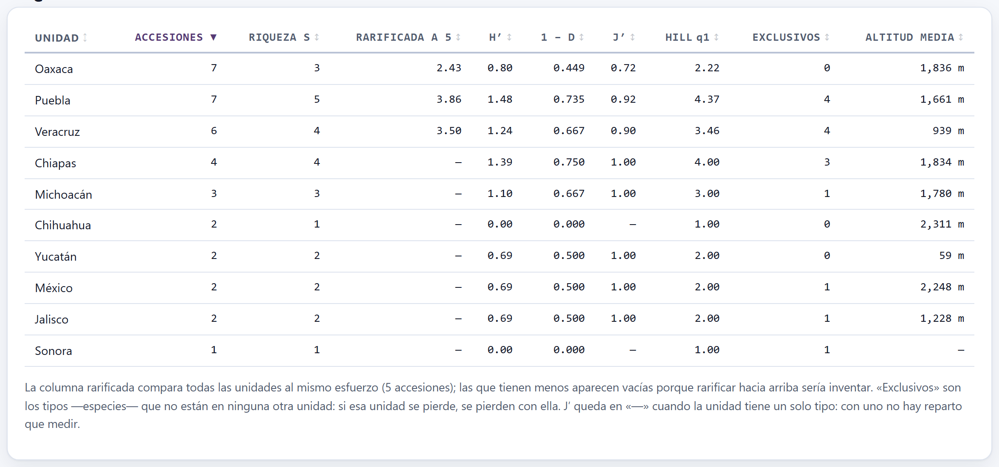
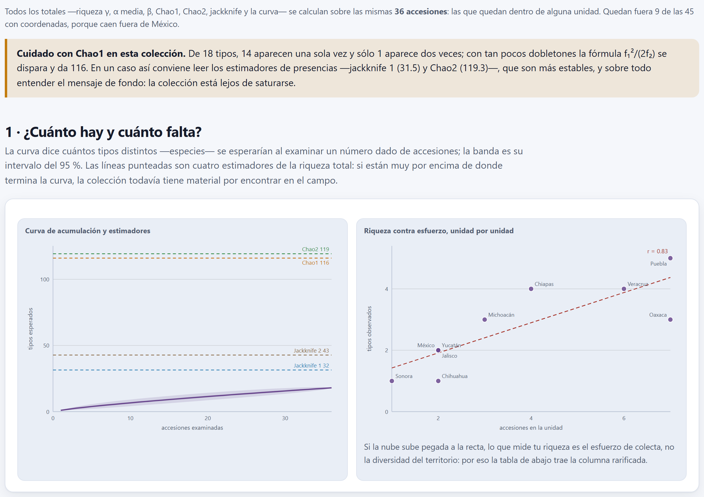
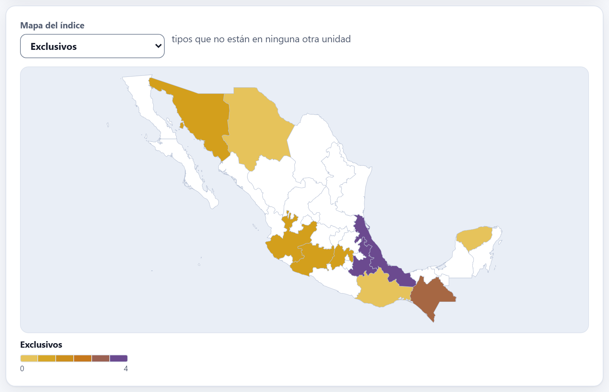
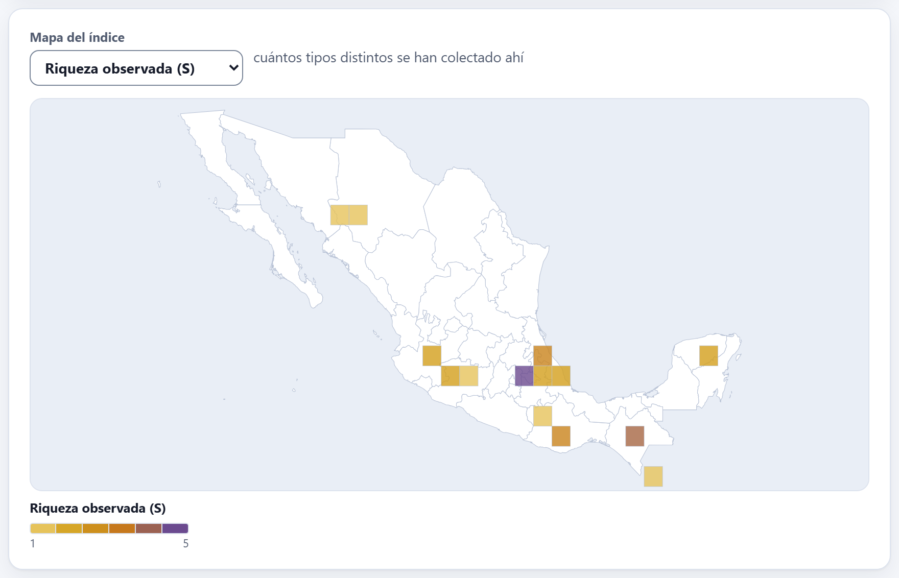
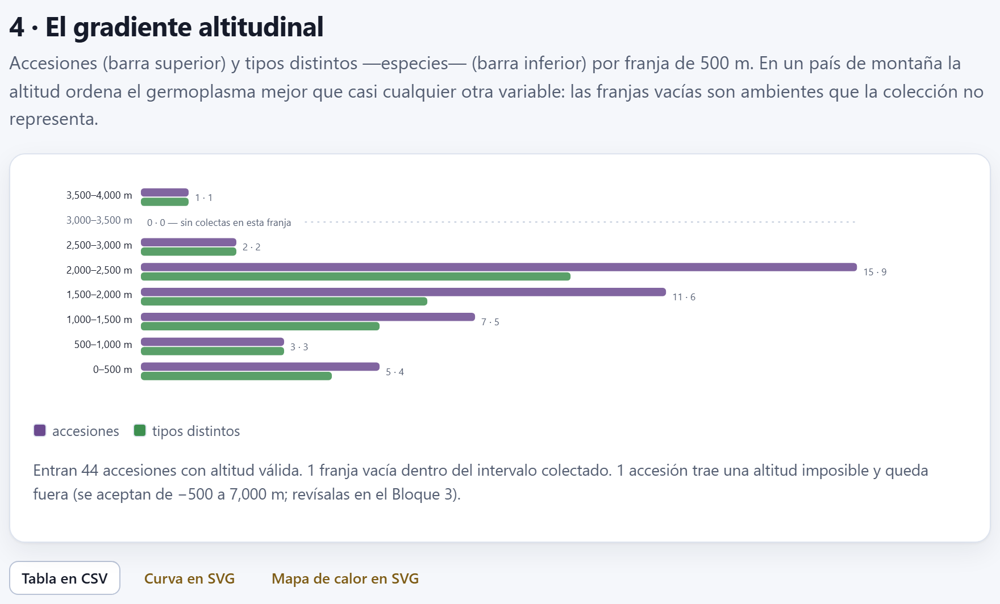

Diversidad geográfica
Una colección no vale por cuántos sobres tiene, sino por cuántas cosas distintas guarda y dónde. El Bloque 5 cuenta esa diversidad por región, por celda o por franja de altitud; la compara a esfuerzo igual, para que la entidad con más salidas de campo no parezca la más diversa sólo por eso; estima cuánto falta por colectar, y pregunta si las regiones cercanas guardan lo mismo. Todo sale del pasaporte: no hace falta capturar nada más.
- 5.1Unidades, tipos y el resumen del bloque
- 5.2Los índices de diversidad, unidad por unidad
- 5.3La rarefacción: comparar con el mismo esfuerzo
- 5.4¿Cuánto falta? Acumulación, estimadores y cobertura
- 5.5Los tipos exclusivos y el mapa del índice
- 5.6¿Se parecen las regiones? Semejanza y agrupamiento
- 5.7La prueba de Mantel y el recambio entre unidades
- 5.8El gradiente altitudinal
- 5.9Exportar, y cómo cambia todo con la unidad
5.1Unidades, tipos y el resumen del bloque
El Bloque 5 trabaja sobre las accesiones con coordenadas del pasaporte (capítulo 2): al entrar, o al cambiar cualquier selector, calcula todo con la espera animada Calculando la diversidad y la prueba de Mantel. Con la colección de ejemplo entran 45 de las 46 accesiones; la que no tiene coordenadas (MEX-ZM-0043) queda fuera de todo el bloque. Si no hay accesiones, el bloque dice Primero carga tus accesiones en el Bloque 2.
![La cabecera del Bloque 5: el título, el párrafo de presentación, los selectores Unidad geográfica en Entidad de México, Qué cuenta como tipo en Especie (género + epíteto), Franja altitudinal en 500 m, Rarificar al primer cuartil (recomendado) y Distancia de composición en Jaccard, y seis recuadros: 36 accesiones analizadas de 45 con coordenadas en 10 unidades, 18 tipos observados, riqueza estimada Chao1 116.0 con 98.0 por colectar, cobertura de la muestra 61.1 %, recambio entre unidades 5.67 con gamma 18 y alfa media 2.7, y diversidad efectiva 10.3](../img/b5-controles.png)
Dos decisiones gobiernan todo lo que sigue: en qué se reparte el territorio (la unidad) y qué cuenta como distinto (el tipo). Los demás selectores afinan detalles.
| Selector | Opciones y qué hacen |
|---|---|
| Unidad geográfica | Entidad de México: cada punto va a la entidad cuyo contorno lo contiene, y los puntos fuera de México no forman unidad. País: el país donde cae el punto (si no cae en ninguno, el de ORIGCTY). Celda de rejilla: cuadros de 0.25°, 0.5°, 1° o 2°. Franja altitudinal: tramos de altitud según ELEVATION; las accesiones sin altitud no entran. |
| Qué cuenta como tipo | Especie (género + epíteto), Cultivo (CROPNAME), Género o Nombre de la accesión (ACCENAME). La especie no distingue subespecies: el teocintle cuenta como Zea mays. Un dato vacío cuenta como el tipo «—». |
| Tamaño de celda | 0.25°, 0.5°, 1° o 2°; sólo con la unidad en rejilla. Las celdas son las mismas que dibuja el mapa del Bloque 4 (capítulo 4). |
| Franja altitudinal | 100 m, 250 m, 500 m o 1000 m. Sirve para la unidad en franjas y, siempre, para la sección del gradiente (apartado 5.8). |
| Rarificar | El esfuerzo común al que se compara la riqueza (apartado 5.3): al primer cuartil (recomendado), a la mediana, a la unidad más pequeña o a 5, 10 o 20 accesiones. |
| Distancia de composición | Jaccard, Sørensen o Bray-Curtis (apartado 5.6). |
Los seis recuadros resumen el conjunto de todas las unidades juntas, no una sola. Todos los totales salen de las mismas accesiones: las que caen en alguna unidad. Con la unidad en entidades, la colección de ejemplo reparte 36 de sus 45 accesiones con coordenadas en 10 entidades. Las otras nueve —los dos maíces de Guatemala, las dos papas, la oca, la cebada, el amaranto de la India, la yuca y el maíz cuya longitud perdió el signo— no entran en ningún cálculo, y una nota al principio de la sección 1 lo dice: Quedan fuera 9 de las 45 con coordenadas, porque caen fuera de México. Con otra unidad la nota cambia de motivo (las franjas, por ejemplo, dejan fuera las accesiones sin altitud válida).
| Recuadro | Ejemplo | Qué dice |
|---|---|---|
| Accesiones analizadas | 36 | Las que caen en alguna unidad; debajo, de cuántas con coordenadas (45) y en cuántas unidades (10). |
| Tipos observados | 18 | Los tipos distintos entre las accesiones analizadas, la riqueza γ: aquí, 18 especies. |
| Riqueza estimada (Chao1) | 116.0 | Cuántos tipos habría en total según Chao1, y cuántos faltarían por colectar (98.0). Con esta colección, poco confiable (apartado 5.4). |
| Cobertura de la muestra | 61.1 % | La cobertura de Good-Turing (apartado 5.4). |
| Recambio entre unidades (β) | 5.67 | La beta de Whittaker; debajo, γ = 18 tipos y la riqueza media por unidad, α = 2.7 (apartado 5.7). |
| Diversidad efectiva | 10.3 | El número de Hill de orden 1 de las accesiones analizadas (apartado 5.2). |
El Bloque 5 cuenta lo que hay en el pasaporte, con sus errores. En la colección de ejemplo sin corregir, el maíz Tuxpeño de la costa, con la longitud sin signo, no cae en Veracruz (cae en Birmania, que aparece como «país» si eliges esa unidad) y se queda fuera de las entidades; el frijol tépari, con 25 000 m, se queda fuera de las franjas y del gradiente, porque la app sólo acepta altitudes de −500 a 7 000 m, y los dos duplicados cuentan doble. Resuelve antes los Bloques 2 y 3 (capítulos 2 y 3). Las cifras de este capítulo son las de la colección recién cargada, para que puedas reproducirlas; donde la limpieza cambia algo importante, se dice.
5.2Los índices de diversidad, unidad por unidad
La sección 2 · ¿Dónde está? es una tabla con una fila por unidad y diez columnas. Un clic en el encabezado ordena por esa columna —de mayor a menor la primera vez, salvo Unidad, que va en orden alfabético— y otro clic invierte el orden; la flecha marca la columna activa, y las celdas con «—» van siempre al final, en los dos sentidos. De fábrica, las unidades van de la que tiene más accesiones a la que tiene menos (las franjas, de la más baja a la más alta).
![La tabla de la sección 2 con diez entidades: Oaxaca 7 accesiones, riqueza 3, rarificada a 2 1.52, H 0.80, 1 menos D 0.449, J 0.72, Hill q1 2.22, 0 exclusivos, 1,836 m; Puebla 7, 5, 1.86, 1.48, 0.735, 0.92, 4.37, 4, 1,661 m; Veracruz 6, 4, 1.80, 1.24, 0.667, 0.90, 3.46, 4, 939 m; Chiapas 4, 4, 2.00, 1.39, 0.750, 1.00, 4.00, 3; Michoacán, Chihuahua, Yucatán, México, Jalisco y Sonora; Chihuahua y Sonora, con un solo tipo, tienen J′ en raya, y Sonora, con 1 accesión, no tiene valor rarificado ni altitud media](../img/b5-tabla.png)
| Columna | Qué es |
|---|---|
| Accesiones | N: cuántas accesiones caen en la unidad. |
| Riqueza S | S: cuántos tipos distintos hay en ella. |
| Rarificada a 2 | Los tipos que se esperarían con el mismo número de accesiones en todas las unidades; el número del encabezado es ese esfuerzo (apartado 5.3). |
| H′, 1 − D, J′, Hill q1 | Shannon, Gini-Simpson, equitatividad de Pielou y diversidad efectiva (abajo); J′ queda en «—» con un solo tipo. La riqueza S es el número de Hill q0; el q2 no tiene columna, pero es 1 / (1 − (1 − D)). |
| Exclusivos | Los tipos que no están en ninguna otra unidad (apartado 5.5). |
| Altitud media | El promedio de ELEVATION de las accesiones de la unidad. Las altitudes vacías o imposibles (fuera de −500 a 7 000 m) no cuentan; si no queda ninguna, «—». |
En una unidad con N accesiones repartidas en S tipos, sea pi = Ni/N la proporción del tipo i. Los índices clásicos son:
Shannon (H′) crece con el número de tipos y con lo parejo de su reparto; usa logaritmo natural. Gini-Simpson (1 − D) es la probabilidad de que dos accesiones tomadas al azar, con reemplazo, sean de tipos distintos. Pielou (J′) va de 0 a 1 y sólo mide lo parejo: 1 es que todos los tipos tienen las mismas accesiones. Con un solo tipo, J′ = 0/0 no está definida: la app escribe «—» (y deja la celda vacía en el CSV).
Shannon, Gini-Simpson y Pielou están en escalas distintas y no se pueden comparar entre sí. Los números de Hill los traducen a una sola escala, la de los tipos efectivos: cuántos tipos igual de abundantes darían la misma diversidad.
q0 cuenta todos los tipos por igual; q1 los pesa por su proporción; q2 da todavía más peso a los abundantes. Siempre q0 ≥ q1 ≥ q2, y la distancia entre ellos dice qué tan dominada está la unidad por unos pocos tipos.
Oaxaca tiene 7 accesiones: 5 de Zea mays, 1 de Phaseolus vulgaris y 1 de Capsicum annuum, así que p = 5/7, 1/7, 1/7.
| H′ = −(5/7 · ln 5/7 + 2 · 1/7 · ln 1/7) = 0.24034 + 0.55597 = 0.7963 → la app escribe 0.80 | |
| Σ p² = (25 + 1 + 1)/49 = 27/49 = 0.5510 | 1 − D = 22/49 = 0.449 |
| J′ = 0.7963 / ln 3 = 0.7963 / 1.0986 = 0.72 | q1 = e0.7963 = 2.22 |
| q0 = 3 · q2 = 49/27 = 1.81 → 3 tipos, pero «valen» como 2.2 parejos, o 1.8 si se pesa más a los abundantes | |
Cómo se lee para decidir: Oaxaca y Puebla tienen las mismas 7 accesiones, pero Puebla guarda 5 especies con J′ = 0.92 y Oaxaca 3 con J′ = 0.72: en Oaxaca, cinco de siete sobres son maíz. Oaxaca está bien representada para el maíz y mal para lo demás. En el otro extremo, Chiapas tiene 4 accesiones y 4 especies (J′ = 1, q1 = 4): cada colecta trajo algo nuevo, señal de que ahí la colección no ha empezado a repetirse y que más esfuerzo seguiría rindiendo tipos nuevos.
Las mismas fórmulas, aplicadas a las 36 accesiones analizadas, dan H′ = 2.336, 1 − D = 0.821, J′ = 0.808, q1 = 10.34 y q2 = 5.59. El recuadro Diversidad efectiva muestra q1 = 10.3: hay 18 especies, pero el peso del maíz (14 de las 36 accesiones) las hace equivalentes a unas 10 especies igual de representadas.
5.3La rarefacción: comparar con el mismo esfuerzo
La riqueza crece con el número de accesiones examinadas: una entidad con treinta colectas casi siempre tendrá más tipos que una con tres, aunque su territorio no sea más diverso. La propia app lo recuerda al pie del panel: Por qué la rarefacción no es un capricho. La rarefacción de Hurlbert responde cuántos tipos esperarías en cada unidad si de todas hubieras tomado el mismo número n de accesiones.
Si de N accesiones se toman n sin reemplazo, la probabilidad de no ver el tipo i, que tiene Ni, es πi = C(N − Ni, n) / C(N, n), donde C es el número de combinaciones. La riqueza esperada es la suma de las probabilidades de sí verlo:
La varianza es la de Heck, van Belle y Simberloff (1975); πij = C(N − Ni − Nj, n) / C(N, n) es la probabilidad de no ver ninguno de los dos. La app calcula las combinaciones con el logaritmo de la función gamma, para que no se desborden con colecciones grandes. Con n = N la rarefacción da S con varianza cero.
| C(7, 2) = 21 · πmaíz = C(2, 2)/21 = 1/21 · πfrijol = πchile = C(6, 2)/21 = 15/21 | |
| E[S2] = (1 − 1/21) + 2 × (1 − 15/21) = 0.9524 + 0.5714 = 1.5238 → 1.52, como en la tabla | |
| Var = 0.4535 − 0.2041 = 0.2494 · desviación estándar = 0.50 |
Se comprueba a mano: con dos sobres sólo hay 1 tipo si los dos son de maíz, C(5, 2)/21 = 10/21; en los otros 11 casos de 21 hay 2 tipos. P(S = 2) = 0.5238, y la varianza de una variable así es 0.5238 × 0.4762 = 0.2494.
El selector Rarificar elige n. Las unidades con menos de n accesiones quedan con «—», porque, como dice la nota bajo la tabla, rarificar hacia arriba sería inventar. Las opciones relativas nunca bajan de 2.
| Opción | n | Qué queda |
|---|---|---|
| al primer cuartil (recomendado) | 2 | Nueve entidades; sólo Sonora, con una accesión, queda vacía. Es un valor al que llegan tres de cada cuatro unidades. |
| a la mediana | 3 | Cinco: Chiapas y Michoacán 3.00, Puebla 2.60, Veracruz 2.45, Oaxaca 1.86. |
| a la unidad más pequeña | 2 | Igual que el cuartil: la más pequeña tiene 1, y la app no baja de 2. |
| a 5 accesiones | 5 | Tres: Puebla 3.86, Veracruz 3.50, Oaxaca 2.43 (figura 5.3). |
| a 10 o a 20 accesiones | 10, 20 | Ninguna: la columna queda entera en «—». |

El compromiso es claro: un n pequeño deja comparar casi todas las unidades, pero distingue poco (con n = 2 el máximo posible es 2); uno grande compara mejor, pero a menos unidades. Mira dos o tres esfuerzos y fíjate en si el orden de las unidades se mantiene. En el ejemplo se mantiene: a 2, a 3 y a 5 accesiones, Oaxaca queda siempre por debajo de Puebla y de Veracruz, aunque tenga tantas o más accesiones. Esa es la conclusión robusta.
5.4¿Cuánto falta? Acumulación, estimadores y cobertura
La sección 1 · ¿Cuánto hay y cuánto falta? mira todas las unidades juntas. A la izquierda, la curva de acumulación: la rarefacción de las accesiones analizadas para n = 1, 2…, 36, con una banda de ±1.96 desviaciones estándar (la varianza de Heck del apartado anterior), y cuatro líneas punteadas con los estimadores de la riqueza total. A la derecha, Riqueza contra esfuerzo, unidad por unidad: cada unidad como un punto (accesiones contra tipos), con su recta de mínimos cuadrados y el coeficiente de Pearson.

Cómo se lee la curva. Si se aplana al final, colectar más de lo mismo ya casi no trae tipos nuevos; si termina subiendo, como aquí, la colección está lejos de saturarse. La de ejemplo pasa de 17.22 tipos esperados con 34 accesiones a 18 con 36. La dispersión de la derecha responde otra pregunta: con r = 0.83, la riqueza de cada entidad la explica sobre todo cuántas accesiones tiene, y por eso la tabla trae la columna rarificada.
Todos usan los tipos raros, porque son la huella de lo que todavía no has visto. Con abundancias (accesiones por tipo, en todas las unidades juntas), f1 es el número de tipos con una sola accesión (singletons) y f2 los que tienen dos (doubletons). Con presencias (en cuántas unidades está cada tipo, de m unidades), Q1 y Q2 son los tipos presentes en una y en dos unidades.
Chao2 = S + ((m − 1)/m) · Q1² / (2 Q2)
Jackknife 1 = S + Q1(m − 1)/m · Jackknife 2 = S + Q1(2m − 3)/m − Q2(m − 2)² / (m(m − 1))
Cobertura de Good-Turing = 1 − f1 / N
| Abundancias: N = 36, S = 18, f1 = 14 (14 especies con una accesión), f2 = 1 (Phaseolus vulgaris) | |
| Chao1 = 18 + 14² / (2 × 1) = 116 | cobertura = 1 − 14/36 = 0.611 = 61.1 % |
| Presencias en las m = 10 entidades: S = 18, Q1 = 15, Q2 = 1 (P. vulgaris, en Oaxaca y Michoacán) | |
| Chao2 = 18 + 0.9 × 225/2 = 119.25 | Jackknife 1 = 18 + 15 × 0.9 = 31.5 |
| Jackknife 2 = 18 + 15 × 17/10 − 1 × 64/90 = 18 + 25.5 − 0.71 = 42.79 | |
En la curva, las etiquetas van redondeadas: Chao2 119, Chao1 116, Jackknife 2 43, Jackknife 1 32. La cobertura es la probabilidad de que la próxima accesión que colectes sea de un tipo que ya tienes: aquí, 61 %; con 39 % de probabilidad, la siguiente sería una especie nueva.
Con un solo dobletón, la fracción de Chao1 se dispara. Cuando hay menos de tres dobletones, la app pone arriba de la sección el aviso Cuidado con Chao1 en esta colección., pero el recuadro del resumen sigue mostrando 116.0: no lo cites sin el aviso. El jackknife 1 es el más estable; Chao2, con un solo tipo en dos unidades, se dispara como Chao1.
La curva, la cobertura y los cuatro estimadores salen de las mismas 36 accesiones, así que se pueden comparar entre sí; pero hablan sólo de lo colectado en México. Si quieres que cubran toda la colección, cambia la unidad a País o a Celda de rejilla: con ellas entran las 45 accesiones con coordenadas y las 24 especies (apartado 5.9).
5.5Los tipos exclusivos y el mapa del índice
Un tipo es exclusivo de una unidad cuando no aparece en ninguna otra. La columna Exclusivos los cuenta, y su suma es la Q1 del apartado anterior. En la colección de ejemplo hay 15, repartidos así: Puebla 4 (Cucurbita pepo, Amaranthus hypochondriacus, Physalis philadelphica, Cucurbita argyrosperma), Veracruz 4 (Cucurbita moschata, Vanilla planifolia, Coffea arabica, Sechium edule), Chiapas 3 (Phaseolus coccineus, Theobroma cacao, Quercus crassifolia), y uno en Michoacán (aguacate), México (trigo), Jalisco (agave) y Sonora (frijol tépari). Oaxaca, con 7 accesiones, no tiene ninguno.
Para el banco, un exclusivo es un riesgo y una prioridad a la vez: si se pierden las accesiones de esa unidad, el tipo desaparece de la colección. Son buenos candidatos para el duplicado de seguridad y para volver a colectar en la misma región; el Bloque 6 (capítulo 6) revisa además los tipos con una sola accesión, que no son lo mismo: un tipo puede ser exclusivo de una unidad con varias accesiones.
Debajo de la tabla, con la unidad en entidades, países o celdas, va el Mapa del índice: un mapa coroplético que colorea cada unidad según el índice que elijas en su selector —Accesiones, Riqueza observada (S) (de fábrica), Riqueza rarificada, Shannon (H′), Gini-Simpson (1 − D), Equitatividad (J′), Tipos efectivos (Hill q=1) o Exclusivos—, con una frase al lado que explica lo que mide. Las unidades sin dato van en blanco; la rampa va del valor mínimo al máximo de las unidades, y los dos van escritos en sus extremos. El mapa usa los contornos y la proyección del Bloque 4, que se explican en el capítulo 4. Con la unidad en franjas de altitud no hay mapa.


Con celdas, la etiqueta de cada unidad es la coordenada de su centro. La rejilla de 1° reparte las 45 accesiones en 21 celdas, de las que nueve tienen una sola accesión. Es la unidad más honesta cuando las entidades son muy distintas de tamaño, pero, cuanto más fina, más celdas con una o dos accesiones y menos se puede rarificar.
5.6¿Se parecen las regiones? Semejanza y agrupamiento
La sección 3 · ¿Se parecen las regiones? compara la composición de las unidades: no cuánto tienen, sino si tienen lo mismo. Sólo entran las unidades con al menos dos accesiones, y hacen falta al menos tres; en el ejemplo entran 9 entidades (Sonora queda fuera).
Para dos unidades A y B, con a y b tipos y c tipos en común, y con xk, yk las accesiones del tipo k en cada una, las disimilitudes son:
Las tres van de 0 (composición idéntica) a 1 (nada en común). Jaccard y Sørensen sólo miran presencias; Sørensen da doble peso a lo compartido y nunca supera a Jaccard. Bray-Curtis pesa además cuántas accesiones hay de cada tipo.
Oaxaca: maíz 5, frijol 1, chile 1. Yucatán: maíz 1, chile 1. Comparten c = 2 de a = 3 y b = 2 tipos.
| Jaccard = 1 − 2/3 = 0.333 | Sørensen = 1 − 4/5 = 0.200 |
| Bray-Curtis = (|5 − 1| + |1 − 0| + |1 − 1|) / (7 + 2) = 5/9 = 0.556 | |
Con Jaccard es el par más parecido de las nueve entidades, y por eso es el primero que une el árbol.
Con la matriz de disimilitudes, la app agrupa las unidades por UPGMA (promedios no ponderados): une el par más cercano, sustituye a los dos por un grupo cuya distancia a cada unidad es el promedio, ponderado por tamaño, de las de sus miembros, y repite hasta que queda un solo grupo. Cada unión se dibuja a una altura igual a la mitad de su distancia; Oaxaca y Yucatán se unen a 0.167 (la mitad de 0.333).
![La sección 3: a la izquierda, el mapa de calor de nueve entidades con el dendrograma arriba, en el orden Veracruz, Jalisco, Puebla, Chiapas, Chihuahua, México, Michoacán, Oaxaca y Yucatán, con Veracruz en el tono más pálido fuera de la diagonal y la leyenda de composición compartida de 0 a 100 %; a la derecha, la dispersión de distancia geográfica contra disimilitud con una recta que baja, r = -0.42, y la nota Mantel: r = -0.422, p = 0.123 con 999 permutaciones y 9 unidades. No hay evidencia de estructura geográfica en esta escala](../img/b5-composicion.png)
Cómo se lee. En el mapa de calor cada celda es la semejanza (1 − disimilitud) entre dos unidades: cuanto más oscura, más comparten, según la leyenda de 0, 50 y 100 %; la diagonal es cada unidad consigo misma. Pasa el puntero sobre una celda para ver el par y su porcentaje. En el ejemplo, Veracruz se separa de todas a la altura máxima, 0.5: sus cuatro especies son exclusivas, y no comparte ninguna con nadie. No es una rareza del territorio, sino un efecto de los datos: su maíz es el que perdió el signo de la longitud. Con las correcciones del Bloque 3 aplicadas, Veracruz recupera el maíz (queda con 7 accesiones y 5 especies) y deja de estar aislada. Chihuahua y México (0.25) y el grupo Michoacán–Oaxaca–Yucatán son los bloques de maíz con un acompañante.
Cambiar la distancia cambia el árbol: con Sørensen el orden es casi el mismo; con Bray-Curtis, que pesa la abundancia, Oaxaca y Yucatán pasan de 0.333 a 0.556, porque los cinco maíces de Oaxaca pesan, y los pares más cercanos son ahora los de entidades con dos accesiones parecidas (Chihuahua, México y Yucatán entre sí, a 0.500).
5.7La prueba de Mantel y el recambio entre unidades
¿Las unidades cercanas guardan lo mismo, y las lejanas cosas distintas? La prueba de Mantel lo pregunta comparando dos matrices: la de distancias en kilómetros entre las unidades (haversine, apartado 3.5) y la de disimilitud de composición. Es la gráfica de la derecha de la figura 5.7: un punto por cada par de unidades —36 con nueve entidades— y la recta de mínimos cuadrados como ayuda visual.
El estadístico es la correlación de Pearson r entre los elementos de las dos matrices, debajo de la diagonal. Como esos elementos no son independientes (cada unidad entra en muchos pares), su significancia no se toma de una tabla: se permutan al azar las filas y columnas de una de las matrices, 999 veces, se recalcula r cada vez y
La prueba es de dos colas. Las permutaciones usan una semilla fija, así que el mismo análisis da siempre el mismo p. Un r positivo y significativo dice que «lo cercano se parece».
Con la colección de ejemplo, la nota bajo la gráfica dice Mantel: r = -0.422, p = 0.123 con 999 permutaciones y 9 unidades. No hay evidencia de estructura geográfica en esta escala. El signo negativo —las entidades lejanas se parecerían un poco más— no significa nada con p = 0.123 y nueve unidades; lo que sí dice es que la composición no la ordena la geografía, sino lo que se colectó en cada salida. Con p < 0.05 la frase cambia a Hay estructura geográfica: lo cercano se parece.
La posición de cada entidad o país es el centro del rectángulo que lo envuelve, y la de cada celda, su centro: con entidades grandes, la distancia entre centros es una aproximación gruesa. Con la unidad en franjas de altitud, la prueba no usa kilómetros sino la diferencia de altitud entre los centros de las franjas, en metros, y así lo dicen el eje, el título y la nota: con el ejemplo, Mantel (contra la diferencia de altitud): r = 0.405, p = 0.176 con 999 permutaciones y 6 unidades. No hay evidencia de estructura altitudinal con estas franjas.
Hacen falta al menos cuatro unidades con dos accesiones o más. Si la prueba no se puede calcular, la nota da la causa: que hay pocas unidades con composición que comparar (por país, sólo 3 de las 8 tienen dos accesiones o más, y la app sugiere usar entidades, celdas o franjas), o que todas las disimilitudes son iguales y no hay variación que correlacionar (por nombre de la accesión, ninguna entidad comparte nombres con otra).
El recambio entre unidades
El recuadro Recambio entre unidades (β) trae la beta de Whittaker, la medida más sencilla de cuánto cambia la composición de una unidad a otra:
Con el ejemplo, γ = 18, ᾱ = (3 + 5 + 4 + 4 + 3 + 1 + 2 + 2 + 2 + 1)/10 = 2.7 y β = 18/2.7 − 1 = 5.67. β = 0 sería que cada unidad tiene todos los tipos; un β grande, que cada unidad guarda una parte pequeña y distinta de la colección, como aquí. Para el banco, un β alto significa que ninguna región sustituye a otra: perder o dejar de colectar una entidad deja huecos que las demás no cubren. Como γ y ᾱ salen de las mismas unidades, β se puede comparar entre análisis con la misma unidad; entre unidades distintas, no: más unidades y más pequeñas dan siempre un β mayor (tabla 5.5).
5.8El gradiente altitudinal
La sección 4 · El gradiente altitudinal reparte por franjas de altitud las accesiones con coordenadas y altitud válida (de −500 a 7 000 m), cualquiera que sea la unidad elegida (con la unidad en franjas no aparece, porque la tabla ya es eso). Dibuja todas las franjas desde la más baja hasta la más alta con datos, también las vacías. Por cada franja con accesiones, dos barras: arriba las accesiones, abajo los tipos distintos, con las dos cifras al lado; una franja vacía lleva 0 · 0 — sin colectas en esta franja y una raya punteada. La más alta va arriba. El ancho de las franjas es el del selector Franja altitudinal, y una nota al pie dice cuántas accesiones entran, cuántas franjas están vacías y cuántas accesiones quedaron fuera por no tener altitud o por traer una imposible.

En el ejemplo, más de la mitad de la colección está entre 1 500 y 2 500 m (26 de las 44 que entran, con 6 y 9 especies), la altitud de los valles centrales donde se concentran los maíces. En la franja de 2 000 a 2 500 m, 15 accesiones dan sólo 9 especies; en la de 0 a 500 m, 5 dan 4. Las tierras bajas están poco colectadas, pero lo poco que hay es variado: es donde más rendiría una salida.
Las franjas vacías son la lectura más útil de la gráfica: de 3 000 a 3 500 m no hay ninguna colecta, entre la papa amarga de 3 797 m y lo demás, así que esa altitud no está representada. Y una altitud imposible no desaparece en silencio: la nota la cuenta (1 accesión trae una altitud imposible y queda fuera) para que la corrijas en la ficha del Bloque 2 (capítulo 2).
5.9Exportar, y cómo cambia todo con la unidad
Al final del panel van tres botones (figura 5.8):
- Tabla en CSV guarda diversidad-geografica.csv, en UTF-8, con una fila por unidad y las columnas
unidad,clave(el código de la entidad, del país, de la celda o el límite inferior de la franja),accesiones,riqueza,rarificada,shannon,gini_simpson,pielou(vacía con un solo tipo),hill_q1,exclusivos,altitud_media,latylon(la posición que usa la prueba de Mantel; vacías en las franjas). Los índices van con tres decimales, sin redondear a dos como en pantalla. - Curva en SVG guarda curva-acumulacion.svg, la curva con sus estimadores.
- Mapa de calor en SVG guarda similitud-composicion.svg, el mapa de calor con su dendrograma.
Los SVG llevan los colores del tema claro, para que se vean igual en un documento. Como en los demás bloques, las figuras se pueden abrir también en el estudio de figuras (apartado I.6). El CSV no guarda la configuración: anota qué unidad, tipo y esfuerzo usaste.
La misma colección, otras unidades
Todos los resultados dependen de la unidad y del tipo. Con la colección de ejemplo:
| Unidad · tipo | Unidades · accesiones | γ | β | Mantel y lo que conviene notar |
|---|---|---|---|---|
| Entidad · especie | 10 · 36 | 18 | 5.67 | r = −0.422, p = 0.123, 9 unidades. Las cifras de este capítulo. |
| País · especie | 8 · 45 | 24 | 6.38 | México concentra 36 accesiones; sólo 3 de los 8 países tienen dos o más, así que hay mapa de calor pero no Mantel. Birmania aparece por la longitud sin signo. |
| Celda de 1° · especie | 21 · 45 | 24 | 12.62 | r = −0.408, p = 0.055, 12 celdas. Chao1 = 224, Chao2 = 234, jackknife 1 = 44.0. |
| Celda de 0.5° · especie | 26 · 45 | 24 | 15.00 | r = −0.399, p = 0.077, 12 celdas; 14 de las 26 celdas tienen una sola accesión. |
| Franja de 500 m · especie | 7 · 44 | 23 | 4.37 | Contra la diferencia de altitud: r = 0.405, p = 0.176, 6 franjas. Sin mapa del índice; el tépari de 25 000 m queda fuera. |
| Entidad · género | 10 · 36 | 14 | 4.38 | Chao1 baja a 50: hay más géneros con dos o más accesiones. |
| Entidad · cultivo | 10 · 36 | 18 | 5.67 | Oaxaca sube a 4 tipos: el cultivo separa lo que la especie junta. |
| Entidad · nombre de la accesión | 10 · 36 | 35 | 9.00 | Casi cada accesión es un tipo: ninguna entidad comparte nombres y la nota explica que Mantel no tiene variación que correlacionar. |
La especie es el tipo natural para la diversidad interespecífica de un banco de muchos cultivos. En un banco de un solo cultivo, el nombre de la accesión (la variedad local o la raza) es lo que interesa, siempre que esté escrito de manera uniforme (apartado 3.3). La entidad sirve para informar a quien administra el territorio; la celda, para comparar con justicia y para planear salidas, y la franja, para ver qué ambientes faltan.
Cuando algo no sale
| Lo que ves | Por qué pasa y qué hacer |
|---|---|
| Primero carga tus accesiones en el Bloque 2. | No hay pasaporte. Carga tu colección o la de ejemplo (capítulo 2). |
| Accesiones analizadas es menor que las accesiones con coordenadas | Algunas no caen en ninguna unidad (fuera de México con entidades, sin altitud válida con franjas); la nota de la sección 1 dice cuántas y por qué. Sin coordenadas no entran al bloque: complétalas en el Bloque 2. |
| La columna rarificada está llena de «—» | El esfuerzo es mayor que las accesiones de casi todas las unidades. Elige al primer cuartil (recomendado) o una unidad más grande. |
| Aparece Cuidado con Chao1 en esta colección. | Hay menos de tres tipos con dos accesiones. Lee el jackknife 1 y la curva, no Chao1. |
| hacen falta al menos tres unidades con dos accesiones cada una | No hay con qué comparar composición. Usa una unidad más grande (celdas de 2°, franjas de 1000 m). |
| La nota de Mantel dice que no se puede calcular | Lee la causa que da: pocas unidades con dos accesiones o más (usa unidades más grandes, o entidades en vez de países) o disimilitudes todas iguales (cambia el tipo; con el nombre de la accesión ninguna unidad comparte nada). |
| La nota del gradiente dice que una accesión trae una altitud imposible | Una altitud mal capturada (fuera de −500 a 7 000 m). Queda fuera de franjas, gradiente y altitud media; corrígela en la ficha del Bloque 2. |
| No se ve el Mapa del índice | La unidad es la franja altitudinal, que no tiene geografía. |
| Si vas a medir la diversidad | entonces corrige antes coordenadas, altitudes y duplicados (Bloques 2 y 3): cada error cambia unidades, árbol y estimadores. |
| Si quieres saber qué unidad está mejor representada | entonces compara la columna rarificada, a dos o tres esfuerzos, y no la riqueza cruda; quédate con el orden que se mantiene. |
| Si una unidad tiene S igual a N, o J′ = 1 con pocas accesiones | entonces ahí falta muestreo: cada colecta trajo algo nuevo. Es candidata a la próxima salida (Bloque 6). |
| Si una unidad tiene muchas accesiones y q1 bajo | entonces está saturada de un tipo: colecta ahí otras especies, no más de lo mismo. |
| Si la curva de acumulación no se aplana o la cobertura es baja | entonces la colección está lejos de saturarse; informa el jackknife 1 como piso de lo que falta, y Chao1 sólo si no aparece el aviso. |
| Si una unidad tiene tipos exclusivos | entonces asegura su duplicado de seguridad y considera volver a colectar ahí. |
| Si la prueba de Mantel da p < 0.05 con r positivo | entonces la diversidad tiene estructura geográfica: reparte las colectas en el territorio en vez de concentrarlas. |
| Si en el gradiente falta una franja | entonces esa altitud no está representada: anótala como vacío para el Bloque 6. |
El Bloque 5 no cambia el pasaporte: sólo lo mide. Lo que aquí resulta pobre o ausente es lo que el Bloque 6 convierte en celdas prioritarias y en una ruta de colecta.